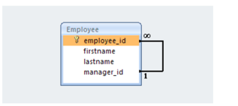
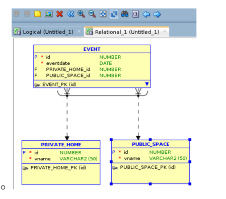
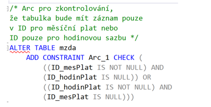

Modelovani-a-popis-databazovych-struktur
Otázky
co je to self-reference
vyuziti
co je to arcus
vyuziti
Self-reference
Vztah entity se sebou samou --> rekurze
entita odkazuje na svůj vlastní FK

Arcus
jedna hlavní entita a několik podentit
tvoří tzv. XOR --> you can either have this or that
FK jsou na straně hlavní entity, kde check kontroluje, že je právě jedna možnost FK vybraná
 
Sum-up
Last modified: 19 May 2024